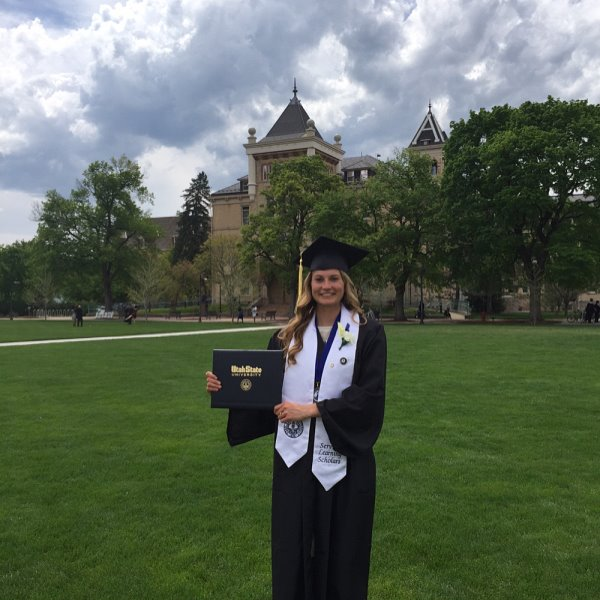
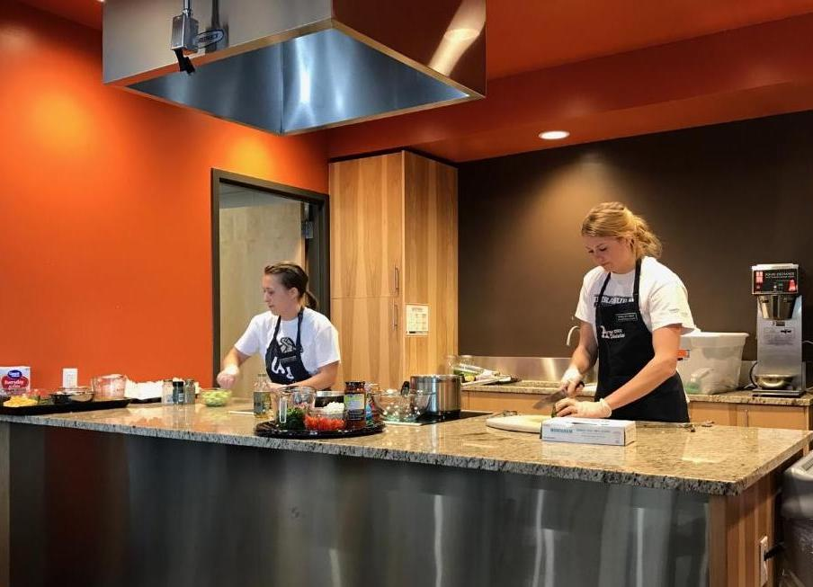
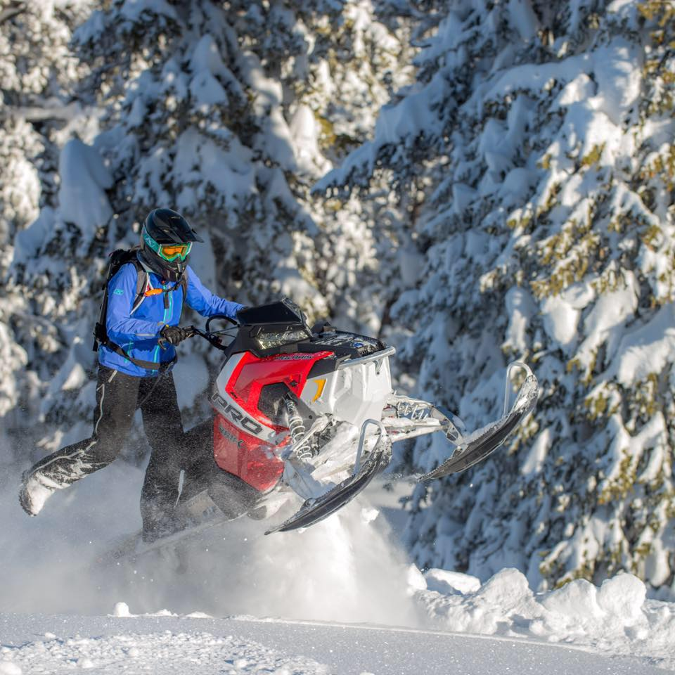

Education
Shelley grew up in Evanston Wyoming and graduated from Evanston High School in 2012. She then moved to Logan Utah to attend Utah State University. Shelley started by taking generals not knowing what she wanted to go into. Shelley then decided to study nutrition and dietetics, in which she was accepted into the coordinated program at USU. She graduated with her bachelors in 2017, with a business minor. Right after graduating she started working at the local summer food service program in Lincoln County Wyoming. During that time she studied for the Registered Dietitian Exam, and passed it in September of 2017 and become a licensed dietitian nutritionist in the state of Wyoming.
Shelley took a year off of school and decided she wanted to go back to school to obtain a Master of Dietetic Adminstration degree to better prepare her for future career opportunities that may come her way. This program was offered online through Utah State University which allowed her to continue working fulltime. In December of 2019 Shelley will graduate with her Master of Dietetic Administration through Utah State University. For her masters project she partnered with the local food pantries to promote healthy eating and lifestyles among low-income individuals and families.
Experience
Ever since Shelley graduated from Utah State University with her bachelors she has been praticing community nutrition. Her first experience was working with the local school district for the Summer Food Service Program in the summer of 2017. She then started working for the University of Wyoming Extension Cent$ible Nutrition Program and a nutrition educator. She is currently still at this position covering North Lincoln, Sublette and Teton Counties. Her work includes planning, and providing direct education to low-income adults and youth, and reporting outcomes. She also is working within the communities on policy, system and environmental projects such as promoting healthy foods in the local food pantries.
During her dietetics program Shelley received experience in clinical nutrition, food service, research, and community nutrition. Her dietetics program provided her with a lot of great experience in foodservice, and clinical nutrition, which were two areas of dietetics she thought she would go into, but she has since then enjoyed working with community nutrition. Never the less she is open to new learning experiences and opportunities that may come her way in the future.
Hobbies
Shelley enjoys spending time outdoors with her family and friends. Some of her favorite hobbies include hiking, motorbiking, riding horses, mountain biking, snowshoeing, hunting, paddle boarding, snowmobiling, camping, and fishing. Shelley and her family currently live in a place where she can access the mountains within minutes of their home.
During high school she played volleyball, basketball and ran track. Her senior year of high school she decided to give snowmobile hillclimbing a try and has competed the last 7 years. Shelley was the 6th women to ever climb over Snow King Mountain in Jackson Wyoming at the World Championship Hillclimb.
She is a hobby photographer and would like to improve her skills by taking wildlife and scenic photography classes one day. Shelley also likes reading, particularly when the weather is bad, or when her family is on the road. She also enjoys working on home improvement projects and working out in the yard and garden. Shelley enjoys making crafts for home decoration.